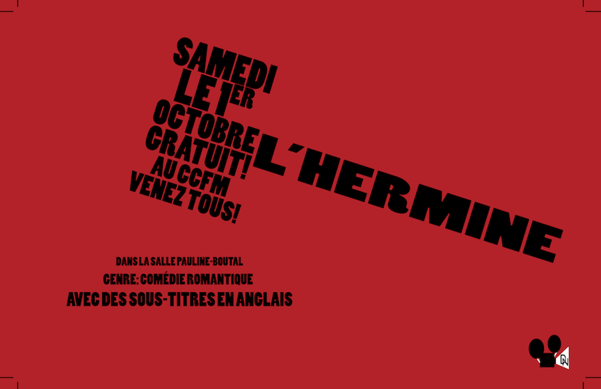

Projet Minimalisme
Voici une pancarte que j'ai fais pour la classe de CM 109 Créativité et Design. L'annonce était pour une comédie romantique qui a faire avec la loi. Toute l'information prends la forme d'une gavel.
Récréation de "Rosie the Riveter" par Norman Rockwell
J'ai fais cette récréation pour la classe d'histoire CM102. La pluspart des objet son fait à la main et esnsuite édité en Photoshop.
Récréation du fusil de Samus Aran
Pour la classe de CM106 on a apprit comment utilser l'application Illustrator. On avait besoin de recréer une image presque parfaitement.
Projet Annonce avec Dimension
Ici j'ai créé une autre oeuvre pour CM109 qui représente quelqun qui joue un jeu vidéo et se perd dedans.
Statistique d'un jeu
Pour CM106 j'ai décidé de faire les statistiques d'un jeu que j'ai joué 800+ heure.